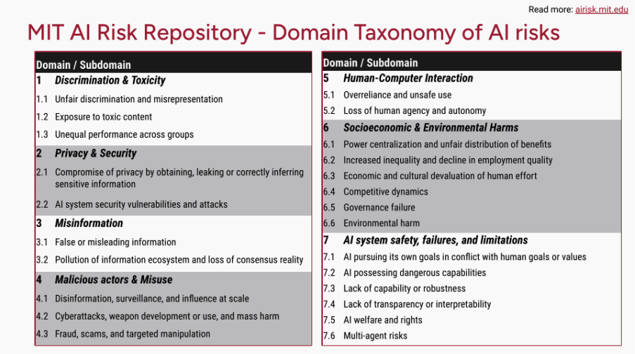

AI Safety Hong Kong
The first AI safety initiative and research org in Hong Kong.
Started in 2025.
Although there is a growing conversation in Hong Kong around navigating increasingly advanced AI, there are major neglected safety risks that are much larger in scale and more consequential.
The MIT AI Risk Repository comprehensively lists over 1700 AI risks, organised into 7 domains.
Amongst these, we note that many major risks are rarely discussed on official or mainstream platforms in Hong Kong, such as:
Disempowerment of humanity, in the sense of society and culture as well as AI takeover of systems like decision-making processes and economic functions,
Impact on users' mental well-being and cognitive development, especially for children.
Environmental harm, including water and energy usage,
Risks to critical infrastructure - potentially catastrophic events for which we're under-prepared,
Possibly even existential risks to humanity caused by misaligned powerful AI.
We therefore see a critical need to expand Hong Kong's public discourse on safe development and adoption of advanced AI.
Research. To conduct and publish research and writings that engage with international and local discourse on AI development and governance, in such a way as to bridge the gap between Hong Kong's understanding of AI safety and the current pressing issues on the frontier.
Convening. To convene, and collaborate with partner organisations to convene, major events that shape the discourse around and future direction of AI in Hong Kong and internationally.
Training. To design, organise and facilitate workshops, courses and other training and educational programmes that upskill and inform HK stakeholders (whether decision makers, technical experts, or other interested parties) on the issue of AI Safety and Governance.